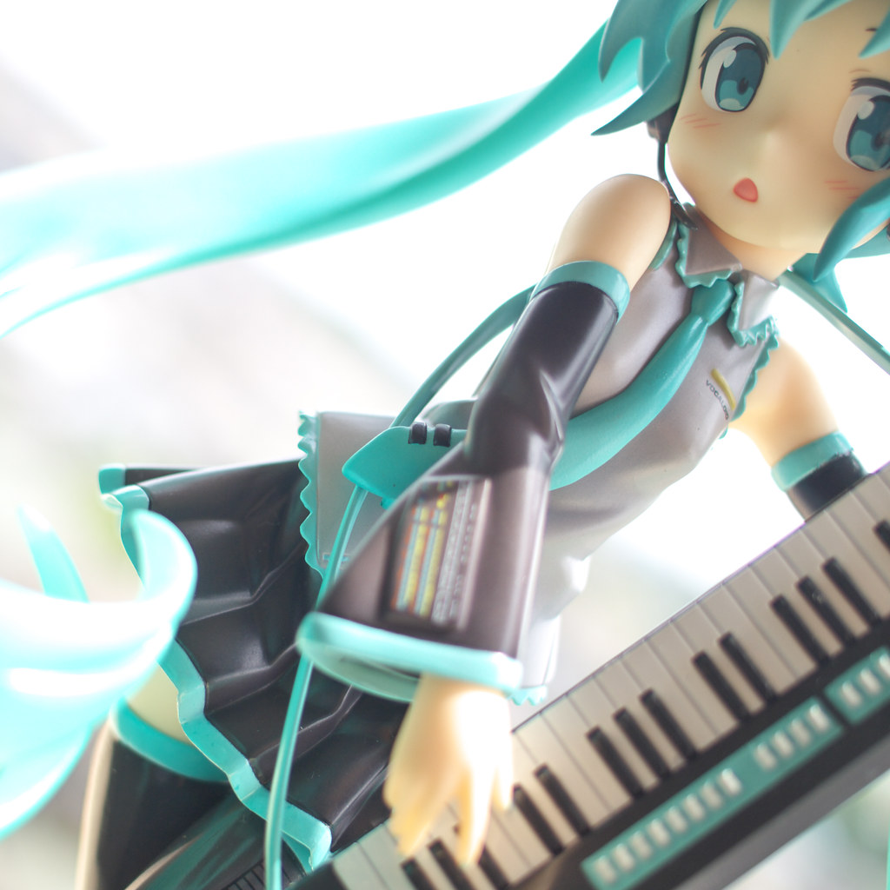

♪ VOCALOID × CREATIVE WEB
MIKU NOTE
世界第一的公主殿下 · 一个献给初音未来的交互式博客
合成音乐 / 弹幕 / 粒子星空 / 冬日主题 —— 全部由浏览器实时生成
0谢谢 · 39
0出道周年
0+ 创作者
0∞ 条弹幕
BLOG · 专栏
最新音讯
把光标移到卡片上试试 3D 倾斜效果，点击卡片阅读全文。
HISTORY · 编年史
ミク大事记
从 2007 年那个夏天开始，电子歌姬一路唱到今天。
GALLERY · 图库
葱粉收藏夹
全部图片来自 Flickr，均按 CC 许可使用，点击可放大查看署名。
GUESTBOOK · 留言板
给 MIKU 的留言
留言保存在你的浏览器本地，刷新不丢失。
ABOUT · 关于本站
MIKU NOTE
这是一个为学习与热爱而生的个人练习项目：以初音未来的「电子歌姬 × 网络文化」为灵感，把网页交互做成一场小小的演唱会。
- 🎹 合成音乐引擎 —— 用 Web Audio API 实时合成三首原创小曲，无需任何音频文件
- 💬 弹幕墙 —— 像演唱会一样把弹幕打在公屏上，并保存在本地
- ✨ 粒子星空 —— 鼠标可拨动的青色星尘，Snow 主题下会下雪
- ❄ Snow Miku 主题 —— 一键从「经典暗色」切换到「冰雪白昼」
- 🥬 Konami 彩蛋 —— ↑↑↓↓←→←→BA，世界第一的公主殿下登场
快捷键：M 播放/暂停 · T 切换主题 · ↑↑↓↓←→←→BA 彩蛋

初音未来 HSP ver. · 摄影：Corsica_JP（CC BY）
图片素材与许可
本站图片来自 Flickr 上的 CC 授权摄影作品（下载于 Openverse 检索），版权归原作者所有：
「初音未来 HATSUNE MIKU」为 Crypton Future Media 的注册商标与角色形象；本页为粉丝同人学习项目，与官方无关。